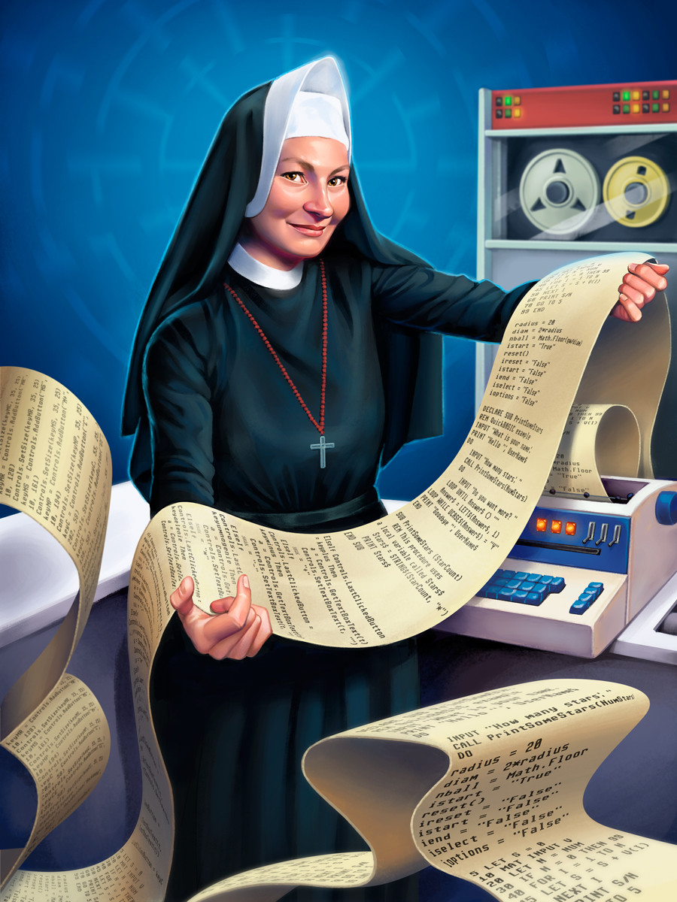

Só a vida religiosa, porém,não era o suficiente para ela.
Keller estudou Matemática na Universidade Católica DePaul onde também obteve o título de mestre em Matemática e Física.E não parou por aí. Em 1958, a Irmã começou a trabalhar em uma oficina de ciência da computação. A Fundação Nacional de Ciência dos Estados Unidos, antes destinada apenas para homens, havia aberto espaço para as mulheres, pois precisava desenvolver a linguagem de programação BASIC. E foi justamente a esse projeto que Mary se dedicou.
Poucos anos depois, em 1965, Mary Kenneth Keller recebeu o título de doutora em ciências da computação. Ela e Irving Tang foram os primeiros doutores da área em todo o território estadunidense .
